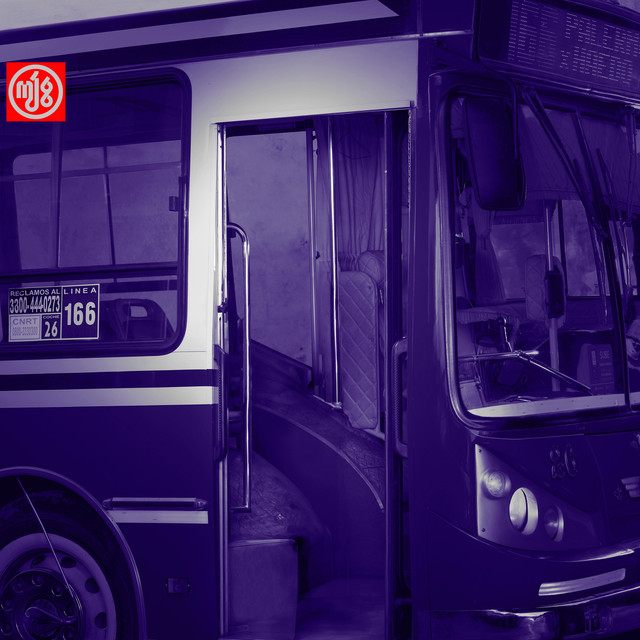
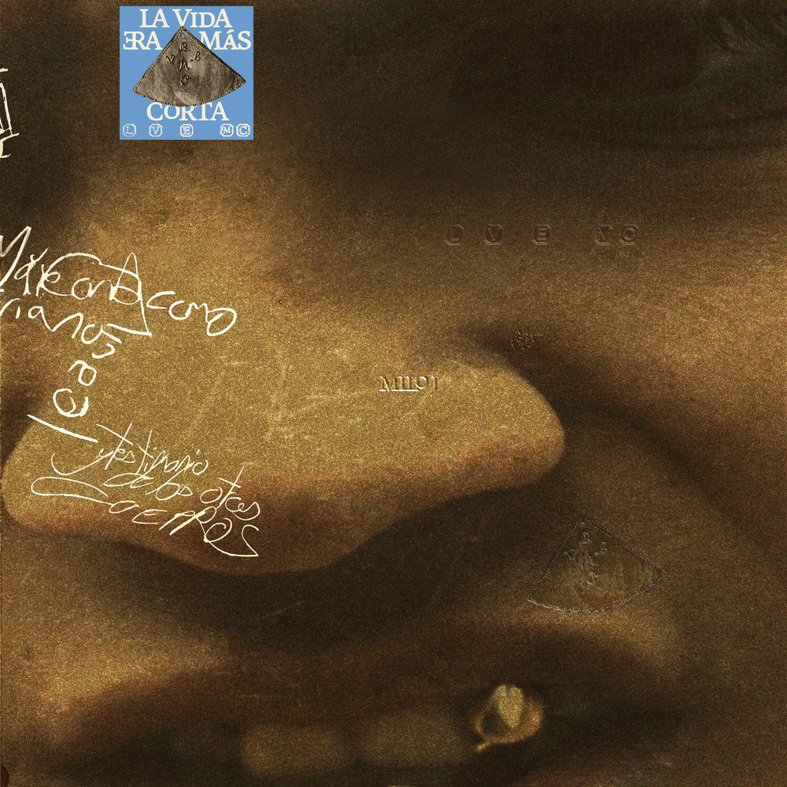
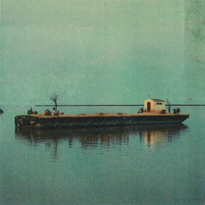

|
111
- TU MANTA
- CARENCIA DE CORDURA
- M.A.I
- DESEO PERDER
- SINCERA TE
- TE FUI A SEGUIR
- DOM1NGO
- UNA BALA
- ALUMBRE
- A1RE
|
 |
166
- 3 PECADOS DESPUES
- ANTES DE LOS 20
- NI CARLOS NI JOSE
- LA TOLA Y EL VALERO
- A VOS
- PARAISO(daña)
- ALIOLI
- DIGAN
- NO HAGO TRAP
- I'AM
- SANGRE PARA DERRAMAR
- HIPPIE
- RETIRADA
- LA TORTURA
- BUEN DIA PORTACION DE ROSTRO
- DAÑA(Elvira)
- NO NO
- OLIMPO
- OJALA
- LO QUE ME CAUSA
|
 |
La Vida Era Mas Corta
- Bajo De La Piel
- Niño
- Gil
- Ama De Mi Sol
- Solifican12
- Lucia
- MmmM
- Llora Llora
- Recorde
- Cuando El Agua Hirviendo
- La Vida Era Mas Corta
- Radamel
- El Invisible
- Luciernagas
- Jangadero
|
 |
La Jangada
- Bajo De La Piel
- Lucia
- Gil
- Radamel
- El Invisible
- La Vida Era Mas Corta
- Luciernagas
- Jangadero
|